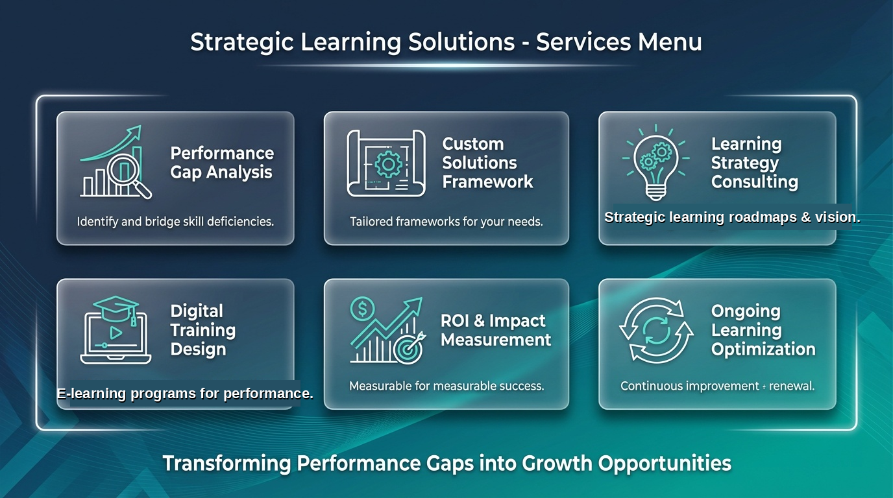

Six integrated services — choose one, combine a few, or engage us as your Fractional CLO to cover the entire spectrum.
We identify exactly where performance is breaking down and bridge the skill deficiencies holding your teams back. No assumptions — only evidence.
Tailored frameworks designed for your business, your people, and your goals — never off-the-shelf. Grounded in ADDIE, shaped by modern learning science.
Fractional CLO-level thinking. We help you build a multi-year learning strategy that aligns to business goals, talent strategy, and AI-readiness.
E-learning, micro-learning, and AI-powered training experiences built for how modern employees actually learn — on-demand, personalised, measurable.
Every program proven against outcomes. We install measurement frameworks that tie learning to revenue, retention, and performance metrics.
Continuous improvement & renewal — because learning strategy isn't a one-time project. Stay aligned as your business evolves.

A focused 5–7 day diagnostic + framework engagement using the KiraZ process. Perfect for founders who need clarity fast.
Ongoing senior L&D leadership — typically 2–4 days/month. We own the strategy, your team owns the execution.
End-to-end L&D rebuild — from diagnostics to a running profit-centre function, typically over 3–6 months.
Book a 30-minute call and we'll recommend the right engagement for your stage.
Book a Discovery Call